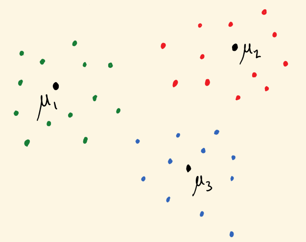
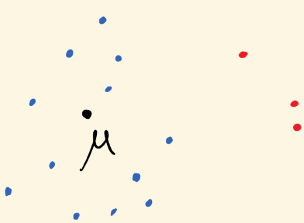
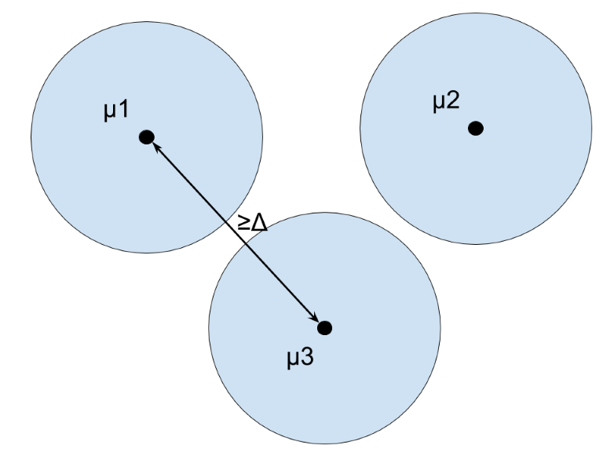
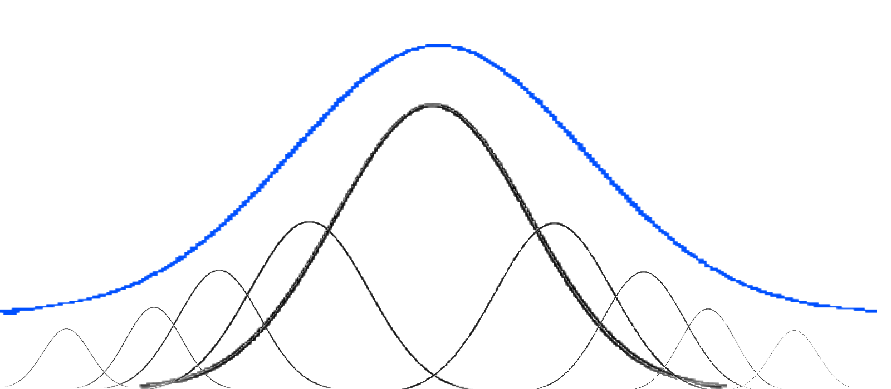
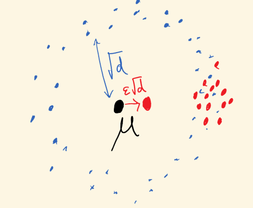

Clustering and Robust Moment Estimation via SoS Proofs
(loading loading loading – advance slide)
\(\newcommand{\P}{\mathbb{P}}\) \(\newcommand{\R}{\mathbb{R}}\) \(\newcommand{\e}{\varepsilon}\) \(\newcommand{\cD}{\mathcal{D}}\) \(\newcommand{\poly}{\text{poly}}\) \(\newcommand{\cN}{\mathcal{N}}\) \(\newcommand{\tensor}{\otimes}\) \(\newcommand{\E}{\mathop{\mathbb{E}}}\) \(\renewcommand{\hat}{\widehat}\)
Clustering and Robust Moment Estimation via SoS Proofs
Mixture Models, Robustness, and Sum of Squares Proofs
Sam Hopkins (Cornell University)
Jerry Li (MIT)
Robust Moment Estimation and Improved Clustering via Sum of Squares Pravesh Kothari (Princeton University/IAS)
Jacob Steinhardt (Stanford)
David Steurer (ETH Zurich)
(This talk presents the union of results from two papers.)
Moment Estimation
Unknown distribution \(\cD\) on \(\R^d\) with some bounded moments
Goal: given samples \(x_1,\ldots,x_n \sim \cD\), estimate
\[\begin{align*} & \text{mean: } \mu = \E_{x \sim \cD} x\\ & \text{higher moments: } \Sigma = \E_{x \sim \cD} xx^\top, \E_{x \sim \cD} x^{\tensor 4}, \ldots \end{align*}\]
Easy: empirical mean, empirical covariance, etc.
\[ \frac 1n \sum_{i \leq n} x_i, \quad \frac 1n \sum_{i \leq n} x_i x_i^\top, \ldots \]
Require \(\poly(d)\)-many samples, computable in \(\poly(d)\) time, excellent convergence guarantees
What if Only a Subset of Data from \(\cD\)?
Unknown distribution \(\cD\) on \(\R^d\) with some bounded moments
Still get \(x_1,\ldots,x_n \in \R^d\), but only an unknown \(\alpha\)-fraction are from \(\cD\).
Can you still estimate moments of \(\cD\)?
Mixture Models
\(\alpha = 1/k\), mixture of \(k\) distributions \(\cD_1,\ldots,\cD_k\)
Standard generative model for clustering and heterogeneous data 
Robust Statistics
\(\alpha = 1-\e\), remaining \(\e\) fraction chosen adversarially
Models data poisoning, model misspecification, and more

blue = clean data, red = outliers
Contributions
New polynomial-time technique for estimating mean and higer moments when only a subset of data comes from \(\cD\), under mild conditions on \(\cD\).
In this talk
New algorithm for learning mixtures of well-separated distributions
New algorithm for mean and higher-moment estimation from \(\e\)-corrupted samples – application: automatic robustification of moment-method algorithms
Cut for time
New algorithm for list learning, a common generalization of mixture models and \(\e\)-corrupted estimation [BBV08,CSV17]
Our algorithms are distribution-agnostic and work for any distribution with certifiably bounded moments: log-concave, affine transforms of products,…
Agenda
- Mixture models – history and results
- Robust moment estimation – history and results
- Algorithm and analysis for mixture models
Mixture Models
Mixture Models
1890s: Pearson invents method of moments to learn mixture of \(k=2\) Gaussians in \(d=1\) dimension.
Our setting: \(d,k\) large, want alg using \(\poly(d,k)\) samples/time
\(\Delta\)-Separation assumption: \(\|\mu_i - \mu_j\| \geq \Delta\) for some \(\Delta > 0\).
For which \(\Delta > 0\) is this possible?

One way around [Moitra-Valient] obstacle: \(k\) Gaussians can require \(2^{-\Omega(k)}\) samples 
Mixture Models – Previous Results and Our Contribution
Rest of talk: \(\cD_i\) Gaussian, for simplicity, covariances \(\Sigma \preceq I\), uniform mixture.
| \(\Delta\) | Algorithm | Reference |
|---|---|---|
| \(10\sqrt{d}\) | greedy | [folklore] |
| \(0.01\sqrt{d}\) | spectral | [D99] |
| \(d^{1/4}\) | EM (captured by greedy) | [DS’01] |
| \(\min(d,k)^{1/4}\) | PCA+EM/greedy | [VW02] |
| \(o(\sqrt{ \log k})\) | (need \(\gg \poly(d,k)\) samples) | [RV17] |
| \(k^{\e}\) | sum of squares | [our works] |
Similar result for spherical Gaussians by [DKS18], next talk
Theorem 1: For every \(\varepsilon > 0\), \(\Delta = k^{\varepsilon}\), can recover \(\mu_i\)’s (and cluster) up to \(1/\poly(k)\) error in time \(d^{O(1)}k^{O(1/\varepsilon)}\).
Mixture Models – Previous Results and Our Contribution
Rest of talk: \(\cD_i\) Gaussian, for simplicity, covariances \(\Sigma \preceq I\), uniform mixture.
| \(\Delta\) | Algorithm | Reference |
|---|---|---|
| \(10\sqrt{d}\) | greedy | [folklore] |
| \(0.01\sqrt{d}\) | spectral | [D99] |
| \(d^{1/4}\) | EM (captured by greedy) | [DS’01] |
| \(\min(d,k)^{1/4}\) | PCA+EM/greedy | [VW02] |
| \(o(\sqrt{ \log k})\) | (need \(\gg \poly(d,k)\) samples) | [RV17] |
| \(k^{\e}\) | sum of squares | [our works] |
Similar result for spherical Gaussians by [DKS18], next talk
Theorem 2: If \(\Delta = C\sqrt{ \log k}\), can recover \(\mu_i\)’s (and cluster) up to \(1/\poly(k)\) error in time \(d^{O(1)}k^{O(\log k)}\), for a universal constant \(C\).
Robust Moment Estimation
Unknown \(\cD\) on \(\R^d\), receive \(x_1,\ldots,x_n \in \R^d\) which are \(\e\)-corrupted.
“Obvious” algorithms for estimating the mean \(\mu\) (outlier removal, etc) have error growing with \(d\). (e.g. \(\|\hat{\mu} - \mu\| \leq O(\e \sqrt d)\))
Ex. \(\cN(0,I)\):

Tukey, 1960: Dimension-independent error but not poly-time
Similar problems (learning halfspaces, PCA with adversarial corruptions), poly time [XCS10, ABL14]
Recent breakthrough: first poly-time, dimension-independent guarantees for robust mean estimation, for distributions with bounded second moments [DKK+16, LRV16]. (e.g. \(\|\hat{\mu} - \mu\| \leq O(\sqrt \e)\))
Higher moments: Existing results limited to covariance estimation for Gaussian/\(4\)-wise independent dist’ns [DKK+17, SCV18]
Kothari-Steinhardt-Steurer (this talk): first poly-time algorithms to estimate higher moments with dimension-independent error, non-Gaussian/\(k\)-wise indep. distributions
Automatic robustification of moment-method algorithms!
Application: robust independent component analysis, via \(4\)th moments
Opening the hood…(back to mixture models)
Main technique: algorithms from simple identifiability proofs
Simplify setting: assume covariances \(\Sigma_i = I\) (“spherical”)
Identifiability: For \(\Delta \geq k^\e\) and typical \(x_1,\ldots,x_n \sim \sum \cN(\mu_i, I)\), if \(v_1,\ldots,v_k\) such that \[ \Pr_{\frac 1k \sum \cN(v_i,I)} (x_1,\ldots,x_n) \approx \Pr_{\frac 1k \sum \cN(\mu_i,I)} (x_1,\ldots,x_n) \] then \(\{v_1,\ldots,v_k\} \approx \{\mu_1,\ldots,\mu_k\}\).
i.e. \(\mu_1,\ldots,\mu_k\) are information-theoretically recoverable
Sum of Squares method: turns a sufficiently-simple proof of identifiability into a polynomial-time semidefinite programming algorithm to find \(\mu_1,\ldots,\mu_k\)
Now well-established, captures algorithms for matrix completion, sparse vector problems, dictionary learning, component analysis problems, tensor problems, and more
Algorithm outline
If \(\e > 0\), separation is \(\Delta > k^{\e}\) and have \(n \geq k^{O(1)} d^{O(1/\e)}\) samples.
Input: \(x_1,\ldots,x_n \in \R^d\)
- Solve an \(n^{O(1/\e)}\)-size semidefinite program (from Sum of Squares hierarchy) designed to find a subset \(S\) of \(n/k\) samples with bounded \(O(1/\e)\)-th empirical moments
\[ \forall \|v\|=1, \, \frac 1 {|S|} \sum_{i \in S} \langle x_i- \mu(S), v \rangle^{10/\e} \leq O_\e(1) \]
Algorithm outline
If \(\e > 0\), separation is \(\Delta > k^{\e}\) and have \(n \geq k^{O(1)} d^{O(1/\e)}\) samples.
Input: \(x_1,\ldots,x_n \in \R^d\)
Solve an \(n^{O(1/\e)}\)-size semidefinite program (from Sum of Squares hierarchy) designed to find a subset \(S\) of \(n/k\) samples with bounded \(O(1/\e)\)-th empirical moments
SDP solution is (nearly) integral (trivial rounding finds clusters and means)
Analysis outline:
Dual of the SDP \(=\) a restricted proof system (“the degree \(O(1/\e)\) SoS proof system”), captures inequalities like Cauchy-Schwarz, Holder’s, triangle inequality
Identifiability proof simple enough to be phrased in this proof system \(\rightarrow\) near-integrality of clustering SDP
Any subset of \(n/k\) samples w. bounded \(1/\e\) moments is nearly a true cluster (whose mean is nearly a \(\mu_i\)). Proof using only Holder and triangle ineq’s:
Recall \(\Delta = k^\epsilon\)
Since true clusters are subgaussian – \((10/\e)\)-th moment is at most \(O_\e(1)\) in every direction.

red = putative cluster \(S\)
If a \(1/k^2\)-fraction of \(S\) is in cluster \(2\)
then \(10/\e\)-th empirical moment \(\frac 1 {|S|} \sum_{i \in S} \langle x_i - \mu(S), \mu_2 - \mu(S) \rangle^{10/\e}\) of \(S\) is at least \[ \frac 1 {k^2} \cdot [\Omega(\Delta)]^{10/\e} \geq k^8 >> O_\e(1) \]
Recap
New algorithm design technique, using Sum of Squares SDPs, for moment estimation when not all data comes from \(\cD\).
First improvement in separation for Gaussian mixtures models in 15 years.
Automatic robustification of moment-method algorithms.
Thanks! Questions?
High-Dimensional Estimation Tasks
Parameters: \(\theta \in \R^K\)
Samples: \(X_1,\ldots,X_n \sim \P(X \, | \, \theta)\) with \(X_i \in \R^d\)
Goal: estimate \(\theta\) by \(\widehat{\theta}(X_1,\ldots,X_n)\) via computationally-efficient algorithm.
Challenge: traditional statistical approaches (max-likelihood, etc.) often exponential in (at least) one of \(d,K,n\).
Example (known in ancient Greece, India, etc.): estimate \(\mu \in \R^d\) from \(X_1,\ldots,X_n \sim \cD\), mean of \(\cD\) is \(\mu\) (use empirical mean)
Example (Pearson, 1890s): estimate \(\mu_1,\ldots,\mu_k \in \R^d\) from \(X_1,\ldots,X_n \sim \frac 1k \sum_{i \in [k]} \cD_i\), mean of \(\cD_i\) is \(\mu_i\).
(clustering, moment methods, dimension reduction, …)
Robust High-Dimensional Estimation Tasks
Parameters: \(\theta \in \R^K\)
Samples: \(X_1,\ldots,X_n \sim \P(X \, | \, \theta)\) with \(X_i \in \R^d\)
Adversary: replace \(X_1,\ldots,X_n\) with \(Y_1,\ldots,Y_n\), with \(Y_i = X_i\) for at least \((1-\e)n\) samples
Goal: estimate \(\theta\) by \(\widehat{\theta}(Y_1,\ldots,Y_n)\) via computationally-efficient algorithm.
Challenge: even for very simple estimation tasks like mean estimation, the obvious estimators/algorithms incur dimension-dependent error.
Example: estimate mean of \(\cN(\mu, I)\) from \(\e\)-corrputed samples
after removing “obvious outliers”, empirical mean still poor: adversary can achieve \(\|\widehat{\mu} - \mu\| \approx \e \sqrt d\)
First poly time, dimension-independent guarantees very recent [DKK+16, LRV16].
Example (Pearson, 1890s): estimate \(\mu_1,\ldots,\mu_k \in \R^d\) from \(X_1,\ldots,X_n \sim \frac 1k \sum_{i \in [k]} \cD_i\), mean of \(\cD_i\) is \(\mu_i\).
(clustering, moment methods, dimension reduction, …)
complex estimation tasks only get harder
Main Contribution
A new algorithm-design technique for high-dimensional estimation.
New algorithms for:
- clustering, learning mixture models
- robust mean estimation
- robust higher-moment estimation
- robust independent component analysis
- list-decodable learning
Estimate empirical mean/moments of a “good” subset of samples.
Robust estimation: good subset = uncorrupted samples
Clustering/mixture models: good subset = a single cluster
Uses the sum of squares method (SoS) to turn simple identifiability proofs into efficient semidefinite-programming-based algorithms.
Agenda
- Overview of results
- Zoom in on simple case – well-separated mixtures of Gaussians
Mixture models: Can cluster and estimate means of a mixture of \(k\) unknown \(d\)-dimensional distributions \(\cD_i\) with \(\poly(k,d)\) time/samples, so long as
Separation: \(\|\mu_i - \mu_j\| \geq k^{\e}\)
Bounded moments: \(\cD_i\) has \(O(1/\e)\) subgaussian moments, and this has a simple (SoS) proofex: strongly \(\log\)-concave distributions, rotations product distributions with \(O(1/\e)\) subgaussian moments
First tight guarantees for distributions with bounded \(O(1/\e)\) moments; approaches information-theoretic optimality for Gaussian mixtures.
Moment tensor: \(r\)-th moment \(M_r\) of a distribution \(\cD\) has entries \((M_r)_{i_1,\ldots,i_r} = \E_{X \sim \cD} X_{i_1} \cdot \ldots \cdot X_{i_r}\).
(\(r=2\) is the covariance matrix)
Robust moment estimation: Given an \(\e\)-corrupted set of \(d^{O(t)}\) samples from unknown \(d\)-dimensional distribution \(\cD\), can estimate \(r\)-th moment tensor \(M_r\) of \(\cD\) in injective tensor norm (high-order analogue of spectral norm)
\[\max_{u \in \R^d} \langle \widehat{M_r} - M_r, u^{\otimes r} \rangle \leq \e^{1-\tfrac r t} \cdot O(t^{r/2})\]
if \(\cD\) has bounded \(t\)-th moments and this has a simple (SoS) proof.
First dimension-independent guarantees for robust higher-moment estimation beyond Gaussians
Application: Robust Independent Component Analysis
Parameters: \(a_1,\ldots,a_d \in \R^d\). Let \(A = (a_1,\ldots, a_d)\) nonsingular
Samples: \(X = AY\) with \(Y \sim \cD\) for unknown, non-Gaussian \(\cD\)Goal: estimate \(a_1,\ldots,a_n\)
Classic alg (orthogonal case): estimate \(\E X^{\otimes 4} \approx \sum_{i \in [n]} a_i^{\otimes 4}\) from samples, apply tensor decomposition
Robust \(4\)-th moment estimation automatically robust-ifies this algorithm
Mixture Models
Parameters: cluster centers \(\mu_1,\ldots,\mu_k \in \R^d\)
Samples: \(X_1,\ldots,X_n \sim \frac 1k \sum_{i \leq k} \cD_i\) where \(\E_{X \sim \cD_i} = \mu_i\).